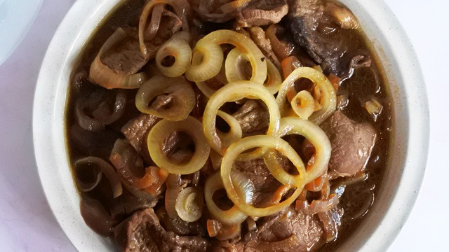

Bistek Tagalog

Description
is a classic Filipino dish made of thinly sliced beef braised in a mixture of citrus juice (more commonly, the local fruit, calamansi), soy sauce, onions, garlic, and pepper. A delicious medley of salty, tangy, and savory flavors, it's traditionally served with steamed rice.
Also known as beefsteak, it was adapted from the Spanish bistec encebollado to suit our local tastes and indigenous ingredients.
Ingredients
- 500 grams beef sirloin thinly sliced and cut into pieces
- 4 Cup fresh calamansi juice
- 1/4 cup soy sauce
- 2 medium white onions peeled, sliced into rings
- 4 cups water or as needed
- ground black pepper to taste (optional)
- Oil as needed, for frying
Instructions
- In a bowl, combine beef, soy sauce, and calamansi juice. Cover and set aside at least one hour up to overnight.
- In a saute pan over high heat, heat enough oil to cover the bottom. Add onions and saute, stirring, until just softened. Remove from heat and set aside.
- In the same pan, add sliced beef. Add water. Bring to a boil then simmer until tender. Remove any scum that rises to the surface. Add more water as needed until beef is tender. Once beef is tender, simmer the sauce until reduced and flavorful. Season with a little ground black pepper if desired.
- Return onions to the pan and cook until just softened. Serve while hot.